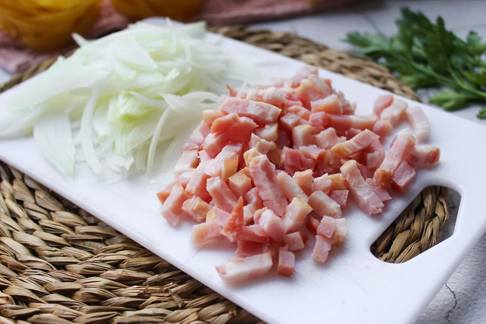
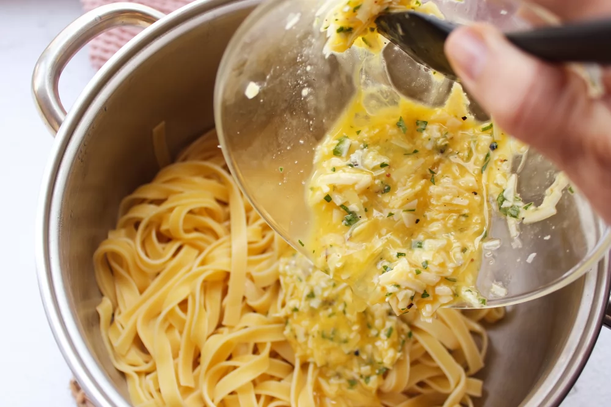

Lo primero que tenemos que hacer es pelar 1/2 cebolla pequeña para cortarla en tiras muy finas. Cortamos en dados 80g de guanciale, panceta o bacon.
En una sartén, derretimos 10 gramos de mantequilla y cocinamos en ella la cebolla picada a fuego medio con el guanciale, panceta o bacon hasta que la cebolla se vuelva translúcida.
Mientras tanto, llevamos al fuego una olla con abundante agua con 1 puñado de sal gruesa y en el momento en el que rompa a hervir echamos 200 g de tallarines secos al huevo. Cocemos los tallarines el tiempo que indique el fabricante, en este caso durante 8 minutos.
Por otro lado, batimos en un bol 1 huevo, 1 yema de huevo, 25 g de queso parmesano o pecorino rallado, unas hojas de perejil fresco picado y 1 pizca de sal y de pimienta negra molida. Reservamos.
Cuando la cebolla y el bacon estén ligeramente dorados, añadimos al sofrito 70 ml de vino blanco y cocinamos hasta que se evapore el alcohol.
Una vez cocidos y escurridos los tallarines, en la misma olla y fuera del fuego, añadimos la mezcla de huevo y queso reservada y lo integramos bien para que la pasta se impregne de forma homogénea.
Retiramos del fuego la sartén con el bacon y la cebolla y volcamos en ella la mezcla de los tallarines con el huevo. Volvemos a mezclar muy bien para que todos los ingredientes se integren y obtener así una salsa carbonara extra cremosa.